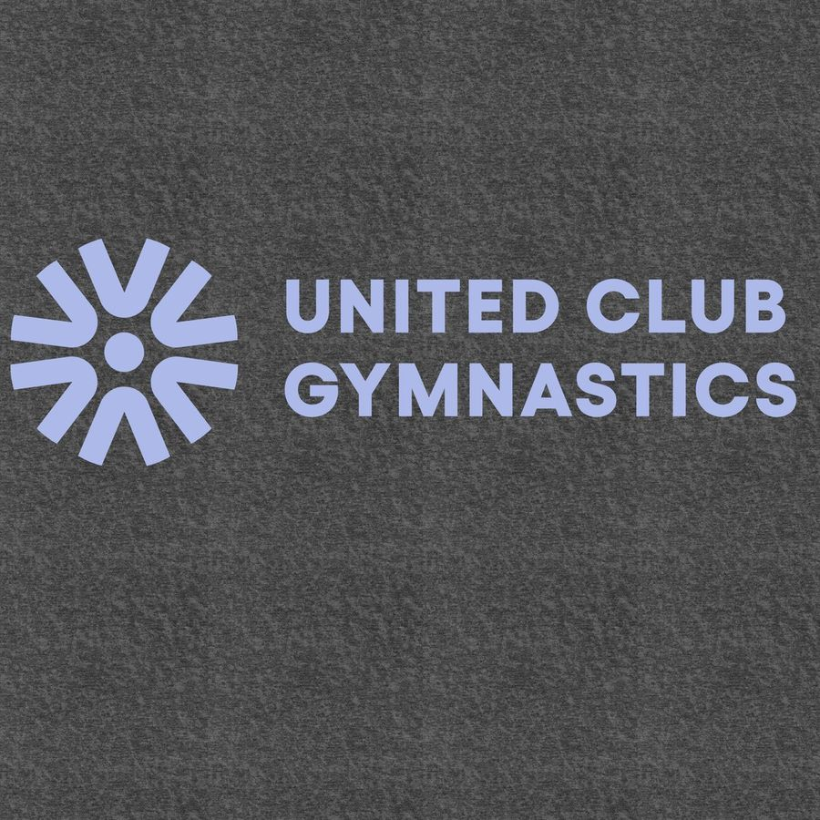
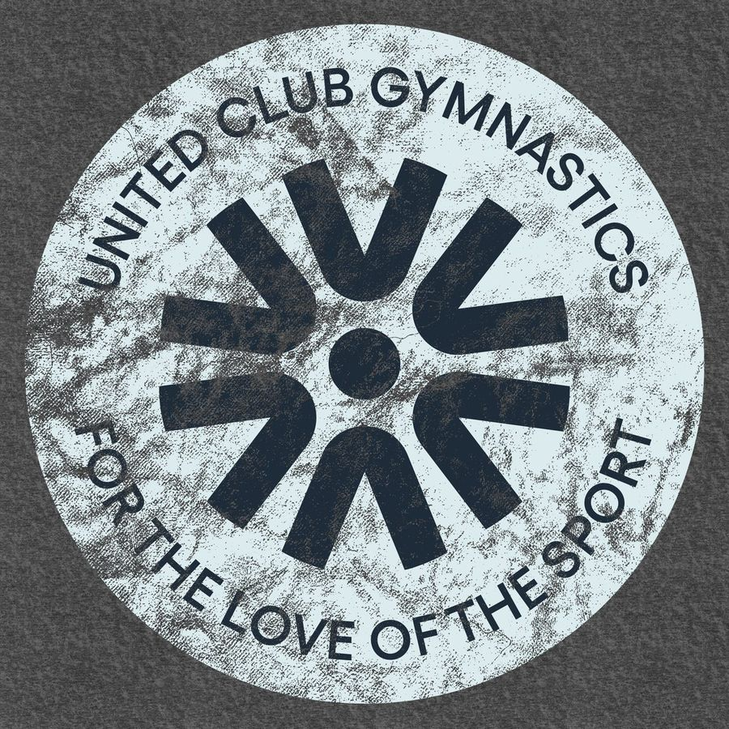
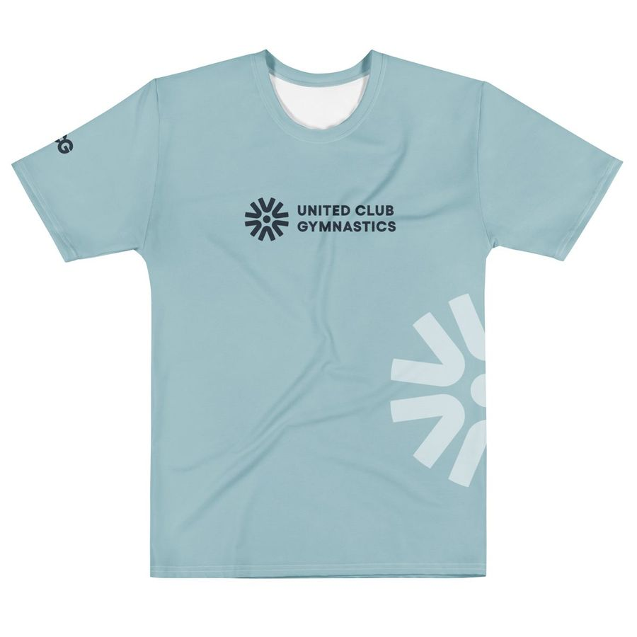
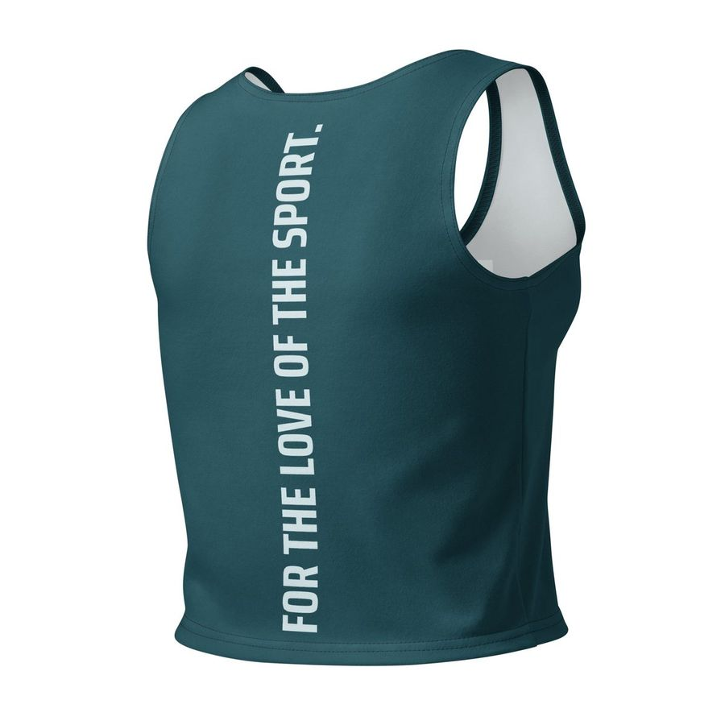
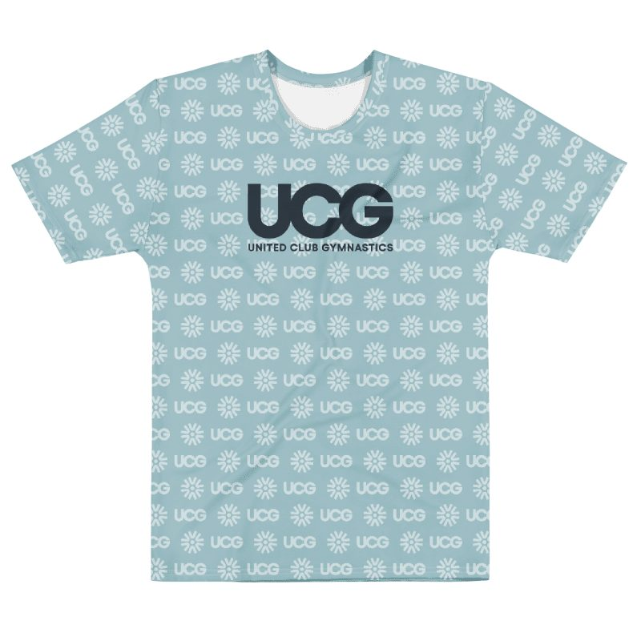
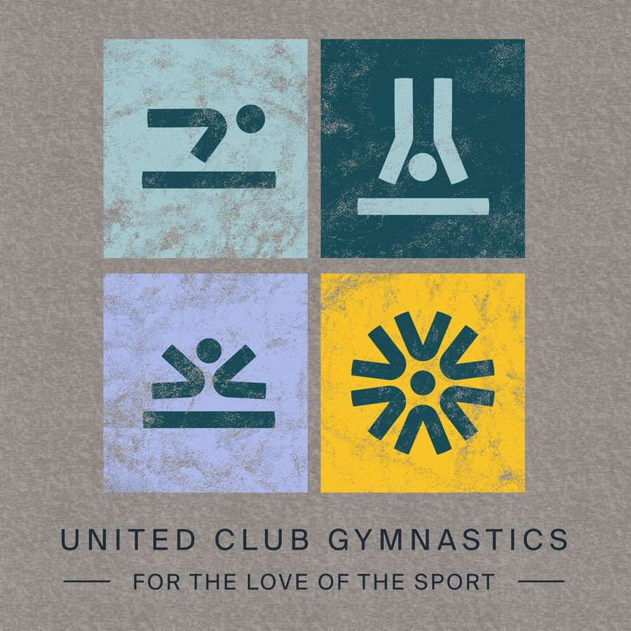

Merch, event graphics, social campaigns and big moments like Nationals. Based on the UCG Guide to Expressive Design (Build Design Studio, 2026), with UCG's later decisions: AA (the standard level of WCAG, the Web Content Accessibility Guidelines. In short, text needs a contrast ratio of at least 4.5:1 against its background, large text 3:1) contrast still applies, and the expressive colors are a fixed list of six.
The core system (brand guidelines) keeps UCG recognizable: the same logo, colors and type every time, so people know it's us on sight. Expressive design builds on top of that system without breaking it. It brings energy for a specific moment (a season, an event, a merch drop) and gives members something to rally around. The skill is knowing how far to push while still looking like UCG.
Where expression lives
- Merch and apparel — Tees, hats, tanks and gear are made to be worn loud. Push the color and let the type carry the energy.
- Event graphics — Banners, signage and hype pieces for one event can flex hard for the moment.
- Social campaigns — Seasonal pushes, drops and one-off moments. Go bigger than you would on the everyday feed.
- Big-moment collateral — Nationals, launches, milestones.
- Core logo lockups — The logo stays as drawn.
- Official communications — Policies, rules, registration info, emails, Google Docs, Slides and Sheets use the core system. Clarity beats flair.
- Signage and wayfinding that has to last — Permanent, functional pieces stay on-system.
- Anything people rely on to find us year after year — like the website, avatars and document headers.
A mixed piece
Nationals 2027
Registration opens Dec 1
unitedclubgymnastics.org
Expressive background and pattern, while the facts (event, date, link) sit on a solid Navy panel in core colors and plain type.
Example content.
The anchor elements
Every expressive piece needs at least one recognizable anchor so people know where it came from. There are three. Keep at least one locked and you can play with the rest.
- Logo. The strongest anchor. You can change the color it plays, add a stroke, or let it sit big in the background. You can't redraw it. As long as the mark is there and unchanged in shape, people know it's us.
- Color. Where you get the most room. Pull from the brand palette and the expressive colors below to shift the mood of a piece while staying on-brand. Off-palette colors are the fastest way to look like someone else.
- Type. Greed Condensed (or Saira Condensed) carries the voice. Scale it big, stack it, run it vertically, let it drive the layout. Keep the typeface on-system and the personality comes through on its own.
One anchor each

2027
Logo locked. The mark as drawn, huge and cropped. Color pushed into the expressive range (Coral, Navy text).

Color locked. Brand palette only. Layout and graphics are free to play.
the love
of the
sport.
Type locked. Big stacked condensed caps. An expressive color (Indigo, White text), no logo needed.
Example content.
What you can do with the mark
In expressive work only (merch, campaigns, event graphics):
- Recolor the logo or mark in any one brand-palette color (for example Purple on charcoal), with enough contrast to read: 3:1 against its background.
- Add a stroke or use an outlined version.
- Use it huge in the background, cropped off the edge of a shirt or graphic, behind the main logo or type.
- Add texture (a distressed or print-worn finish) over the shape, without changing the shape.
- Repeat it in a pattern, like the event pattern below.
Never redraw, stretch, rotate, rebuild or rearrange the mark or wordmark, and never set "UCG" in a font. Use the files in assets/logos/ as drawn. In everyday materials, stick to the four colorways (navy, light, white, black) and no outlines (see BRAND.md).
Do

Don't
UCGEveryday materials stick to the four supplied colorways with no outlines. See the logo rules.
Expressive colors
Six extra colors for expressive work only, on top of the brand palette. Never use them in official communications, wayfinding, UI, Google Docs, Slides or Sheets.
The six, with the text color that works on each
Only these six. Don't pick shades in between.
How they sit with the brand palette

Outer ring: brand primary and secondary colors. Inner ring: the expressive range.
The event pattern
A repeating grid of "FOR THE LOVE OF THE SPORT" / "2026–2027 NATIONALS" lockups with the mark and "UCG", in Light Blue on Blue Green, from the design guide (p54). Use it for backgrounds and merch, as drawn: assets/patterns/ucg-event-pattern-2026-27.svg (or .png). It's texture, so it never carries information on its own.


Examples from UCG merch






Mockups from UCG's 2026 merch concepts. Each piece keeps at least one anchor and pushes something else.
Learn from athletic brands
Look at how big athletic brands stretch their identity across merch, events and campaigns, and notice what stays the same.
- The mark never disappears. On event and apparel work the logo is always in the frame. It might change color, carry a stroke or play a background role, but it's never redrawn. The fun happens around it.
- The type does the heavy lifting. Strong, bold type is what makes the work feel like theirs. Colors shift with the context, but the typographic voice holds.
- Color flexes, identity holds. Expressive pieces reach into a wider color range for energy and mood, while the core elements underneath keep it grounded.
Before it ships
- Do keep an anchor: the logo, the colors or the type doing recognizable work.
- Do pull color from the approved range: the brand palette plus the six expressive colors, nothing else.
- Do let type carry the energy. Strong type is the fastest route to on-brand personality.
- Do keep every piece of text at AA contrast, and keep the facts in core colors and plain type.
- Don't redraw the mark. Recolor it, stroke it, move it, crop it big in the background; never rebuild it.
- Do hire a designer for anything big or public-facing, like apparel and large print runs. Questions about whether something is on-brand? Ask your team lead or department head.